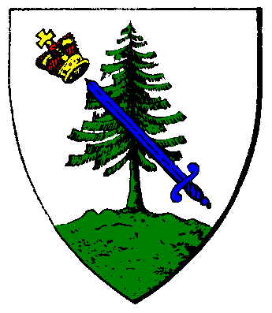

| Übersicht,
Off-Topic |
|
Gefangen in einen Bierglas!
|
Nemetes Ar-Faêníel
 |
Vielleicht keine Hauptspeise,
aber als Nachspeise ist der Wellensittich auch bestimmt ganz lecker.. ^^..
Woooo ist das Vögelchen .. =D
 |
20.09.09 17:49

 |
|
Klaus Störtebeker
 |

Guten Appetit ;-) |
20.09.09 20:47
|
|
| Iga Pelogran (RIP) |
Dann aber mal nen Hot Dog eingeworfen!!!
 |
20.09.09 21:35
|
|
| Celebrimbor (RIP) |
Ich weiß nicht, was ihr habt. Ich finde weiterhin alle Fotos putzig! |
21.09.09 14:42
|
|
| Kydaoye (RIP) |
wie sich das immer so weiter entwickelt...
erst katze im glas...
dann katze mit wellensitich
dann katze am essen
dann katze zum essen...
dann hund zum essen xD |
21.09.09 15:35
|
|
| Agesha Goldsucher (RIP) |
Wann kommts erste Kanibalenbild? *fg* |
21.09.09 15:56
|
|
| Glorfindel von Gondolin (RIP) |

bitte schön |
24.09.09 9:10
|
|
| Asmodai (RIP) |
ja pfui deibel *schüttel* |
24.09.09 9:31
|
|
| Kydaoye (RIP) |
lol Suppenfuß am Stück^^
von Flosse & Tritt GmbH xD |
24.09.09 11:33
|
|
| TiaDalma (RIP) |
Ja wundervoll Glorfindel von Gondolin, dass hättest du weg lassen sollen...das passt doch garnicht zusammen ^^ |
26.09.09 18:19
|
|
Übersicht,
Off-Topic
|